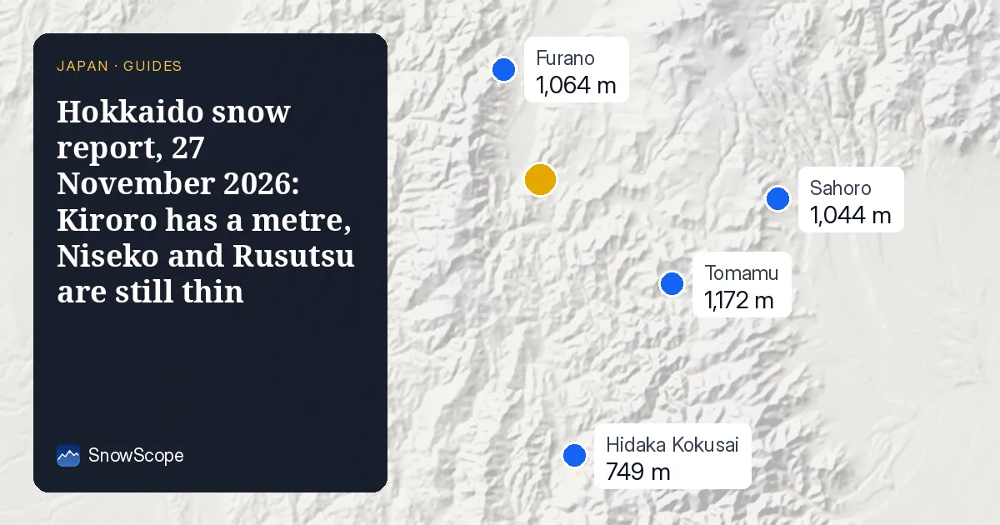
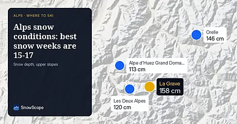

Hokkaido snow report, 27 November 2026: Kiroro has a metre, Niseko and Rusutsu are still thin
Is Hokkaido ready for the first ski weeks of December? On 27 November 2026 the answer depends a lot on where you look. On our map, Kiroro already has about 119 cm of snow on its upper slopes and Sapporo Kokusai about 103 cm, while Niseko United has about 31 cm, Furano about 29 cm and Rusutsu only about 16 cm. Of the 133 ski areas in Hokkaido, 57 have snow on their upper slopes today, and 12 have 30 cm or more.
See the live snow forecast for Hokkaido in the SnowScope appSnow depth, powder alerts and the 3D map, free.
Where the snow is deep
The two leaders sit close together in the hills west of Sapporo. Kiroro, at 523 to 1,180 m, has about 119 cm, after about 36 cm of new snow in the last seven days. Sapporo Kokusai, at 620 to 1,089 m, has about 103 cm, with about 32 cm in the last week. These are the snowiest slopes on the island this autumn, because the cold north-westerly winds hit these hills first after crossing the Sea of Japan.
In the centre of the island, Asahidake, the ropeway on the Daisetsuzan volcano, has about 61 cm and got the most new snow of all in the last week, about 57 cm. Sapporo Teine has about 40 cm, Tomamu about 38 cm and Sahoro about 33 cm.
| Resort | Snow today | New snow, last 7 days | New snow, next 8 days |
|---|---|---|---|
| Kiroro | 119 cm | 36 cm | 20 cm |
| Sapporo Kokusai | 103 cm | 32 cm | 17 cm |
| Asahidake | 61 cm | 57 cm | 53 cm |
| Sapporo Teine | 40 cm | 20 cm | 12 cm |
| Tomamu | 38 cm | 27 cm | 14 cm |
| Sahoro | 33 cm | 24 cm | 9 cm |
| Niseko United | 31 cm | 32 cm | 10 cm |
| Furano | 29 cm | 33 cm | 28 cm |
| Niseko Moiwa | 26 cm | 29 cm | 9 cm |
| Rusutsu | 16 cm | 21 cm | 7 cm |

Niseko, Furano and Rusutsu: a thin start
Niseko United, the biggest ski area in Hokkaido with 59 km of runs on our map, has about 31 cm on its upper slopes, after about 32 cm of new snow in the last week. Niseko Moiwa next door has about 26 cm. Furano has about 29 cm, after about 33 cm in the last week, and Rusutsu about 16 cm, after about 21 cm.
The weather stations in the towns tell the same story. At Kutchan, the town at the foot of Niseko, at 176 m, 10 cm of snow was measured at 09:00 this morning, down from 18 cm yesterday. Kimobetsu, the nearest station to Rusutsu, had 14 cm, down from 24 cm, and Akaigawa, in the valley below Kiroro, 10 cm. Sapporo and Furano had no snow at all on the ground. Across Hokkaido, 37 of the 120 stations had snow this morning, against 40 a week ago.
Where it snowed in the last day
The fresh snow of the last 24 hours fell in the cold far north, not in the ski towns. Shumarinai, a lake village at 255 m north of Asahikawa, had 61 cm on the ground this morning, with 22 cm of it new in the last 24 hours; a week ago it had 17 cm. Otoineppu had 24 cm, all of it new, Bifuka 22 cm, also all new, and Horokanai 25 cm. Sounkyo, the hot-spring gorge below Kurodake, had 23 cm.
The next eight days: light snow, mild valleys
From 27 November to 4 December our ensemble forecast brings only small amounts to most of the big names. At the top of Niseko United the middle forecast is about 10 cm of new snow, between 6 cm and 18 cm, and at Rusutsu about 7 cm. Kiroro gets about 20 cm, Sapporo Kokusai about 17 cm and Tomamu about 14 cm. Furano does a bit better, with about 28 cm at the top.
The one place with a lot of snow coming is Asahidake: about 53 cm at the top, between 37 cm and 71 cm, with nights down to about -16 °C. Lower down, the week is mild: the bases of Niseko and Furano reach about 10 °C on the warmest day, and the Niseko base gets about 19 mm of rain over the eight days. That will not build a deep base below mid-mountain.
What it means for early December
If you have a trip booked for the first week of December, the safest snow is high and in the west: Kiroro and Sapporo Kokusai already have a deep base, and Asahidake keeps getting new snow. Niseko, Furano and Rusutsu have a usable start on their upper slopes, but they need the December storms to cover the lower runs. Expect the best snow near the top lifts, and check each resort's own lift and run openings before you go.
Do not judge the season by late November. In most winters the north-westerly winter monsoon sets in during December and brings snow to Hokkaido almost every day until February; a thin start in Niseko this week says little about Christmas or January.
Follow Hokkaido every day
SnowScope covers Japan every day, with snow depth, new snow and the forecast for 523 ski areas. Open Niseko, Kiroro or Furano on the map to see the snow at each height, and follow a resort to get a message when a big snowfall is on its way.
Tips for skiers
- Deepest snow today: Kiroro (about 119 cm) and Sapporo Kokusai (about 103 cm) on the upper slopes.
- Niseko United about 31 cm, Furano about 29 cm, Rusutsu about 16 cm: good near the top, thin lower down.
- Next 8 days: about 10 cm at the top of Niseko, about 53 cm at Asahidake.
More maps (external sites)
About these numbers
Snow on the upper slopes, today and in the next days: the SnowScope snow map of 27 November 2026 (an estimate for the area of each ski resort, not the resort's own report). Town snow depth: measured at Japan's official weather stations at 09:00 Japan time. Forecast at the top lift, mid-mountain and base: an ensemble forecast, given as the lowest, middle and highest forecast.
Cite this report
For research, teaching or the press: the numbers and charts are free to reuse under CC BY 4.0 with this citation.
SnowScope (2026), Hokkaido snow report, 27 November 2026: Kiroro has a metre, Niseko and Rusutsu are still thin, https://snowscope.app/blog/en/2026/11/hokkaido-snow-report-niseko-kiroro-furano-27-november-2026.html, accessed 2026-11-27
SnowScope (Atlas Labs). (2026, November 27). Hokkaido snow report, 27 November 2026: Kiroro has a metre, Niseko and Rusutsu are still thin. SnowScope snow reports. https://snowscope.app/blog/en/2026/11/hokkaido-snow-report-niseko-kiroro-furano-27-november-2026.html
BibTeX
@misc{snowscope2026hokkaidosnowreportniseko,
author = {{SnowScope (Atlas Labs)}},
title = {Hokkaido snow report, 27 November 2026: Kiroro has a metre, Niseko and Rusutsu are still thin},
year = {2026},
month = nov,
howpublished = {\url{https://snowscope.app/blog/en/2026/11/hokkaido-snow-report-niseko-kiroro-furano-27-november-2026.html}},
note = {Published 2026-11-27 13:13 UTC; accessed 2026-11-27}
}· CC BY 4.0 · Methods, data and tools →
Follow Hokkaido
Free: a message when fresh snow is coming, and the forecast every morning.
More snow reports

Mt. Hood Meadows leads the US West with 84 cm on upper slopes. Up to 35 cm more arrives by Sunday. SnowScope, 27 Nov.

Czechia went from 420 km² of snow cover a week ago to 24,460 km² today. The transformation happened in the last two days as a system brought 12 cm across high ground.

La Grave has the deepest snow in the French Alps at 158 cm upper slopes. Peak season runs weeks 15-17. Data from 27 November 2026.